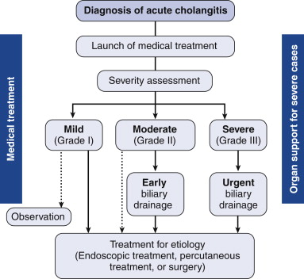

Cholangitis
DEFINITION
Acute inflammation and infection within the bile duct, usually in
association with biliary tree obstruction.
Discusses manifestations and management of cholangitis.
top D I A B M
I M home
INCIDENCE
Increases with age
Peaks 50-60y
top D I A B M
I M home
AETIOLOGY
Physiology Notes
Normal sterility of the biliary tract maintained by several factors:
- intact SOO; prevents reflux of duodenal contents.
- unimpeded efflux of bile
- immunoglobulin A in bile
- bacteriostatic properties of bile salts
Cholangitis can ensue when these factors breached / diminished;
or if FB present in the duct.
Congenital duct lesions
Inflammation
Infection, often following FB / stone impaction.
- most common bugs: E coli, then Klebsiella and Enterobacter.
- contribution of anaerobes (bacteroides, clostridium) more common
if older / instrumented and should be covered.
Flukes
Strictures & causes
Tumours
- pancreatic Ca
- cholangioca
- porta hepatis tumours / mets
Iatrogenic
Blocked endobiliary stent 2nd most common cause.
Biliary instrumentation
top D I A B M
I M home
BIOLOGICAL BEHAVIOUR
Pathophysiology
In our referral base, stones usually originate in GB; cf in SEA,
where stones often originate in duct.
Infection often occurs after nidus sets up in duct (eg. stone).
- (access is from direct ascent of bacteria from duodenum into the
bile duct).
- haematogenous seeding via portal vein path likely to play a much
more minor role.
Duct wall ischaemia can contribute in choledocholithiasis.
Leads to localised pain as inflammation spreads transmurally.
Bacteria multiply
E. coli
Presence of foreign bodies (e.g. stents) can provide a niche for
bacteria including E. Coli.
Of special interest because it secretes Beta-glucuronidase.
- this deconjugates bilirubin glucuronide
--> results in poorly soluble unconjugated bilirubin that
precipitates in bile, adding to the foreign body load and leading to
brown pigment microstones.
Complications
Systemic sepsis
Repeated bouts of cholangitis may lead to strictures
--> and ultimately liver parenchymal destruction & fibrosis
(i.e. 2ndary biliary cirrhosis).
top D I A B M
I M home
MANIFESTATIONS
As for choledocholithiasis / cholecystitis.
Major systemic
upset common.
Jaundice.
Charcot's triad; pain, jaundice, fever
- only present in 50% or so
- but jaundice quite common at 90%
- fever and abdo pain less prevalent 66%
Beware absence of pain in the elderly
'Reynolds pentad'
= ridiculous eponymous nonsense
- means also hypotension and mental status derangement.
--> suggestive of cholangitis with severe sepsis.
top D I A B M
I M home
INVESTIGATIONS
Principles
The 'Tokyo guidelines' bring an evidence-based approach to
definition, diagnosis and management.
Diagnosis can be 'suspected' or 'definite' based on testing
criteria.
Then perform a severity grading.
Tokyo Guidelines Diagnostic Criteria
A. Clinical hx and manifestations
- hx of biliary disease
- fever /chills
- juandice
- abdo pain
B. Lab data
- inflammatory response (WCC / CRP)
- abnormal LFTs (ALP, GGT, ALT, AST)
C. Imaging Findings
- biliary dilatation or evidence of etiology (stricture, stone,
stent)
Suspected = Two or more in A
Definite = Charcot's triad or 2 or more in A plus B and C.
Tokyo Guidelines Severity Criteria
Mild
Responds to initial medical therapy
Moderate
Doesn't respond to initial medical treatment
Not assoc. with organ dysfunction
Severe
Onset of dysfunction in one or more of:
- cardiovascular: requiring dopamine >5ug/kg/min or any
dobutamine
- nervous: disturbance of consciousness
- resp: PaO2/FiO2 ratio <300
- renal: creat >2.0 mg/dL
- liver: INR>1.5
- haem: platelets < 100,000
Haematology
Neutrophilia
Biochemistry
LFTs - esp GGT and ALP.
Raised bilirubin.
Amylase elevated mildly in 30%
Micro
Routine blood cultures
Coags
Routine.
Imaging
USS
First investigation.
Non-invasive, rapid, cost effective and highly sensitive.
Bright echo with acoustic shadowing if stones found.
Ducts may be dilated.
- normal = <4mm + 1mm every decade >40y
False negative in ~5% of examinations.
ERCP
Generally follows USS
Allows direct chonagiography and therapeutic intervention.
- check coags first
- ensure consent re post op pancreatitis obtained.
PTC
If ERCP not possible.
CT / MRI
Allows abdo assessment but insensitive for CBD stones.
MRCP much better for ducts but prolonged duration means unsuitable
if unstable.
- prefer ERCP for cholangitis
Radioisotope Scans:
Eg with HIDA, DIDA - extracted from the blood and rapidly excreted
into the biliary tree.
Good for identifying cystic duct obstruction, and assessing
gallbladder function if given with CCK.
top D I A B M
I M home
MANAGEMENT

Acute management
1. Resuscitation
Attend
to
ABCs, may be shocked.
2. Antibiotics
Broad spectrum
- commonly triples
- alternatively tazocin if wanting to avoid gentamicin-induced
nephrotoxicity.
- not ceftriaxone alone due to poor activity against enterococcus
species.
3. Coagulopathy
Correct with Vitamin K
ERCP
85%+ will respond to resuscitation and empiric antibiotic therapy.
- duration based on response.
As per Tokyo
- moderate not responding; e.g. continuing pain or
leukocytosis
- severe shows organ failure usually requiring ICU
Effective in 90-98%.
- bile aspirated from CBD then decompressed before contrast
cholangiography
- else can set off bacteraemia
Sphincterotomy contraindicated in coagulopathy
- stent the duct as a temporary measure.
PTC
More invasive; in those failing ERCP or lacking access
- e.g. if reconstructed.
Surgical Drainage
Has fallen out of favour due to poorer outcomes with more
invasive procedures.
Mainly of historical interest.
- wen needed, usually involves a choledochotomy, placement of 16Fr+
T-tube in bile duct.
Delay definitive tehrapy until a later date.
May play a role in Mirizzi, cholelithiasis, benign and malignant
biliary strictures.
top D I A B M
I M home